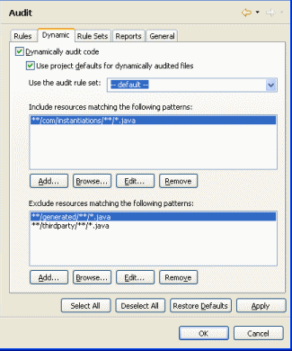

Preferences - Audit
|
|

Rules
The Rule page displays the selected audit rule set along with a list of all of the audit rules that are available. There is always exactly one default audit rule set denoted by an asterisk following the name of the audit rule set, and it is used when selecting Audit Code in the CodePro Tools menu. To display the enabled audit rules and their parameters for a particular audit rule set, select that audit rule set in the audit rule set dropdown list above the list of audit rules.
The Find Rule button provides a quick way to find various audit rules. Entering a keyword in the top entry field will cause any audit rule with that word in its name, description or notes to be shown in the middle list. Selecting an audit rule in the list will show its description or note in the bottom pane (depending on which includes the match). Clicking the OK button will close the dialog and set the selection of the audit tree to the chosen rule. Options are provided to search audit rule names, descriptions or notes.
Within each audit rule set, each audit rule can be individually enabled or disabled by clicking on the check box beside the name of the audit rule. The Parameters page (shown above) allows you to edit the configuration parameters of the selected audit rule. At minimum, each audit rule with have at least one parameter- its severity level. The Description page (shown below) displays the audit rule ID (useful for locally disabling any rule) and a brief description of what the selected audit rule will check for when a code audit is performed.
The Auto Fix page (shown below) controls the auto fix behavior of the rule. When auto fix is turned on, any detected violations will be automatically corrected. The Automatically resolve violations for this rule option turns auto fix on and off for any rule that allows auto fixing (note that this option is grayed out for any rule that does not allow auto fixing). Rules with auto fix turned on are indicated with a green decorator (e.g., ). Rules with auto fix turned off are indicated with a gray decorator (e.g., ). Rules that do not allow auto fixing are not decorated at all.
The Notes page (shown below) provides a place to enter audit rule set specific notes about an audit rule. This is very useful if you want to create a team standard and then document the reasons that various rules are enabled (or not) or their specific settings.
When the menu item  Audit Code is selected, the enabled audit rules will be computed. The results
will be displayed in the Audit view.
Audit Code is selected, the enabled audit rules will be computed. The results
will be displayed in the Audit view.
Dynamic
The Dynamic page shows a list of inclusion and exclusion patterns that will be dynamically audited using the selected audit rule set when the "Dynamically audit code" option is turned on. Buttons for adding, browsing, editing and removing patterns are provided. Turn this option off to improve performance.
The patterns follow the Ant syntax and are taken to be relative to a project's root directory. For example, adding the pattern "**/com/google/**/*" to the inclusion list would include any files in the com.google package hierarchy. Likewise, adding the "**/generated/**/*" pattern to the exclusion list would cause any file in a package with "generated" in its path to be excluded from dynamic auditing.
When dynamic auditing is turned on for a package, opening a class in that package will result in it being automatically scanned for audit violations and any violations found are added to the audit view (to the "Violations in Open Files" audit violation set). When that file is saved, the file is rescanned and the audit violations in the audit view are updated to reflect the new state of that file. When the editor is closed, the audit violations for that file are removed from the audit view.
Note that the product can manage multiple violation result sets simultaneously, but only one can be active and visible at one time. If the dynamic audit violation set (e.g., "Violations in Open Files") is not active, you would not see any dynamic audit results.
|
 |
Rule Sets
The Rule Sets page shows a list of all of the audit rule sets that are defined. Use the New button to create a new audit rule set. This will open the Audit Rule Set wizard. Use the Copy button to copy an existing audit rule set and the Delete button to delete an existing audit rule set. The Set Default button makes the currently selected audit rule set into the default audit rule set. The Hide button hides the selected audit rule sets from view elsewhere in the product. The Show button restores them. The Report button will generate HTML documentation for the selected audit rule set.
The Maximum Violation Counts fields control the maximum number of violations of various types that can be recorded into a single violation results set. The Total field sets the maximum number of violations in the entire violation set. The Per Rule field sets the maximum number of violations per audit rule. The Per Compilation Unit field sets the maximum number of violations recorded per file. The Per Rule Per Compilation Unit field sets the maximum number of violations of a single type that can occur in a single file.
The Enable automatic resolution option controls whether automatic resolutions is enabled for this audit rile set (this is turned off by default). A global option on the General page is available to disable automatic resolutions for all audit rule sets.
The Ignore disable directives when using this rule set option provides a way to override any rule disable directives that might be placed within any source files. Turning this on will cause all audit violations to be recorded, even those that would normally be ignored because of disable directives.
The Only audit resources option provides a way to only show violations occurring in files modified on or after a given date or since a specific tagged version. If the date fields are populated with positive integers, they will represent a specific date. If negative integers are used, they will represent a delta date from the current date. For example, place a "-1" in the day field will show only violations in files modified in the last 24 hours. Likewise, "-7" would show violations in files modified in the last calendar week.
The Only audit lines modified on or after
the specified version option modifies the behavior to only show
violations on lines of code modified on or after a given date or since a
specific tagged version. These options are very useful in filtering out
violations in legacy code created prior to a specific point in time or as a
way to focus on violations created very recently.
Note that this feature requires Eclipse 3.2 or 3.3 and an Eclipse 3.2 Team
API-compatible source code manager (CVS is a good example).
The Export button is used to export one or more audit rule sets to an XML-based preference file. At the bottom of the wizard page, is an area for selecting the location to which the preference file should be exported. The first option, File System allows the user to export the audit rule set to any arbitrary location in the file system. It defaults to \preferences\audit.pref. The second option, Project, allows the user to store the audit rule set to a project loaded in their workspace. This makes it easy to put the audit rule set file under some form of source code control such as CVS, PVCS or ClearCase. The third option, Server, can be used only if a collaboration server has been specified in the preferences. It allows the user to store the preferences on the collaboration server. The wizard automatically remembers the last path used. The fourth option, User, allows the user to send preferences to other users without intervention by the receiving user. Thus, this option provides a way to silently set preferences in the workbenches of other users. This can only be done for users and groups led by the user, unless the user is the administrator, in which case it can be done for any user or group. Audit rule sets may be exported in locked or unlocked format. If a locked audit rule set is imported, it may not be modified. If an audit rule set is exported as the default, it will become the default audit rule set when loaded into another workspace.
The
Import button is used to import one or more audit rules from an
XML-based preference file. At the top of the dialog, is an area for
selecting the location from which the audit rule file should be imported.
The first option, File
System allows the user to import the audit rules from any arbitrary location in the
file system. It defaults to \preferences\audit.pref. The second option, Project,
allows the user to load audit rules from a project loaded in their
workspace. The third option, Server, can be used
only if a collaboration server
has been specified in the preferences.
This option allows the user to load preferences from the collaboration
server. The wizard automatically remembers the last path used. The
Load as default option will cause the imported audit rule set to become
the new default rule set. The Overwrite existing sets option causes
the imported audit rules sets to override any existing sets with the same
names. If this option is turned off, the imported rule sets have numbers
appended to their names.
The Convert button is used to PMD and FindBugs configuration files into CodePro Audit Rule Sets. Add one or more foreign configuration files using the Add button (they will all be merged). Click Next to enter the name of the new Audit Rule Set.
The final page of the conversion wizard shows the mapping between foreign rules and CodePro rules. Unmapped rules are also listed and the list may be sent to CodePro support to request implementation of any missing rules.
Reports
The Reports page controls various options concerning
the reports generated by the audit tool. The Show recommendations
option determines
whether recommendations for fixes are shown in the various report types. The
Show severities option determines
whether severities for each rule type are shown in the various report types.
The Author Information options determine whether author names are
shown for each violation. The Generate files for violated resources
option determines whether detail files
are generated for each HTML report that show the violations in context
within the application source code. The File Name options control the default file names used for the
various report types. When a single resource (project, package or class)
has been audited, the Include target in file name option will cause
the resource name to be used as the base file name. The Include date in
file name will cause the current date to be appended to the name of
the file. The Include time in file name will cause the current time
to be appended to the name of the file.
|
|
General
The General page controls various options concerning the maximum number of audit result sets, whether to include subpackages, whether to automatically refresh audit result sets, the presentation of recommendations and integration with the Eclipse 2.1/3.x Quick Fix feature. The Limit the number of result sets option sets the maximum number of result sets. Each result set consumes memory, so this number should be kept low. Once the maximum is reached, any new ones will eliminate the oldest result set. The Include subpackages of selected packages option controls whether subpackages are included in the analysis. The Automatically refresh violations when selecting a set option will cause violation result sets to be refreshed automatically when switching between them. Under Eclipse 2.1 & 3.0, the Enable Quick Fix support option determines whether audit violation markers contribute quick fixes that may be invoked directly in the editor. The Include standard resolutions in Quick Fix option determines whether standard resolutions (e.g., disable the rule) are included with the other quick fixes. The Enable automatic resolution option controls whether automatic resolutions is available on a global basis (if turned off, this overrides the settings on all audit rule sets). The Place file-wide disable directives after header comments option controls whether disable directives are placed at the top of the file or after any initial header comments. The Show repairs in entire compilation unit option determines whether the Javadoc Repair editor shows repairs for the entire compilation unit, or just the Java element selected when it was opened. The Use the long names of the audit rules option controls whether audit rules show up in the tree using their short names or their long names. The Highlight audit rules modified after option causes audit rules created or modified after the specified date to be highlighted in the audit rule list. This makes it easy to see what rules have been added since the last version that you have installed.
Annotations
The Workbench > Editors > Annotations preference page can be used to control how the audit violation annotations appear within the Java Editor. You can independently control whether the text of the violation is highlighted and whether the violation is shown in either the overview ruler or vertical ruler.